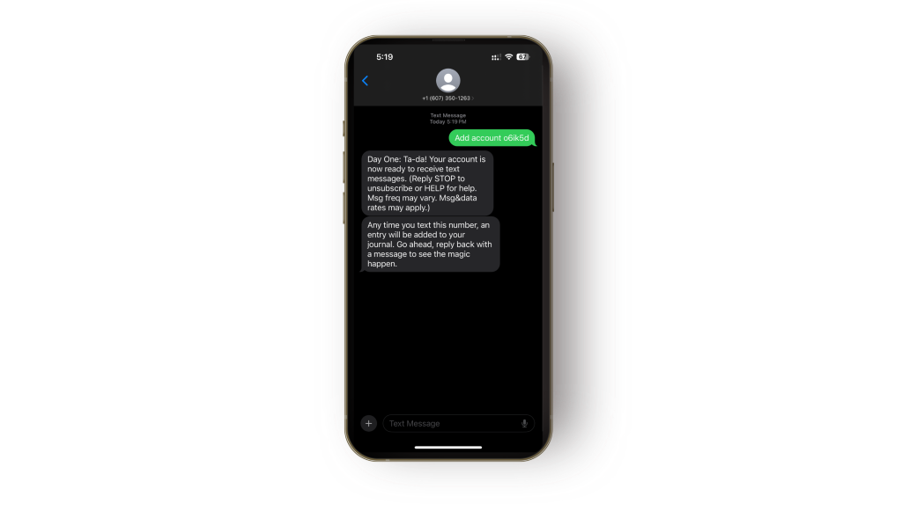
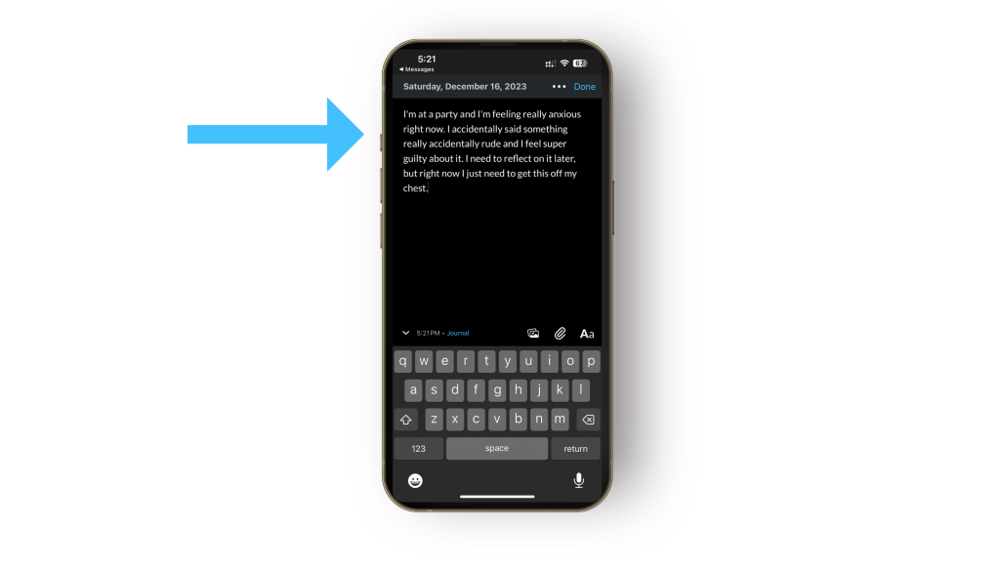

JOURNALING TIPS
Have you ever wanted to stop time so you could journal in the moment? Maybe you’re at
a party, and you say something you regret. In an ideal world, you could pause, spend twenty
minutes metabolizing whatever happened in your journal, then go back to the party, feeling
revived. Or maybe your kid says something hilarious, and you want to remember it—not just
the quote, but the beautiful sunshine, the delicious picnic, and all the other special details of
that moment.
Sure, you could pull out your Day One app in these moments and jot down a note to yourself
right from your phone. But sometimes, it’s easier to just send a quick text: maybe you don’t
want someone looking over your shoulder and asking what on earth you’re doing (it’s easier to
say: “oh, I’m just texting a friend!” than “I’m journaling on the go!”—although, if that’s you,
more power to you). Or perhaps you find it easier to journal as a text response to a reminder,
compared to opening the app and starting from scratch.
In this article, we’ll walk you through how to journal with SMS, including text reminders to keep
you honest with your daily journaling journey.
Here’s how to get started.
You should have one from Day One!

Respond whenever you want, however you want. It will look like you’re just dashing off a quick
text, when really, you could be journaling about anything that’s on your mind.
You should see your text as a new journal entry. Continue it any time. Happy journaling!

Text messaging in Day One is available with Day One Premium and is available to subscribers in
the USA and Canada. Here’s even more on text messaging to Day One.